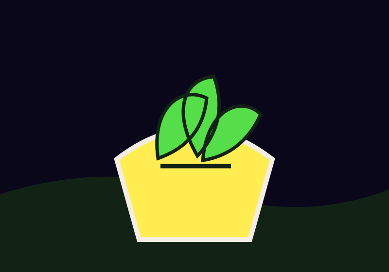

Participação
Encontros realizados, tarefas compartilhadas e novas pessoas que conheceram a iniciativa.
REGISTRE · frequência e formas de contribuiçãoHORTUS · CULTIVO E IMPACTO
Acompanhar o trabalho coletivo ajuda a reconhecer aprendizados e a planejar os próximos ciclos.
Ver formas de cultivo
CULTIVO E IMPACTO
Uma horta pode gerar muitos tipos de resultado. Registros simples, atualizados ao longo do tempo e explicados com clareza ajudam o grupo a entender o que mudou.
UM REGISTRO QUE FAZ SENTIDO
Escolha medidas que o grupo consiga acompanhar. Registre período e método para que cada resultado tenha contexto.
Encontros realizados, tarefas compartilhadas e novas pessoas que conheceram a iniciativa.
REGISTRE · frequência e formas de contribuiçãoAlimentos cultivados, destino da produção e aprendizados de cada plantio.
REGISTRE · período, quantidade e partilhaMateriais e resíduos orgânicos que voltaram ao ciclo de cultivo.
REGISTRE · tipo, volume e usoEXEMPLO DE LEITURA
Valores ilustrativos para mostrar como período, medida e destino podem aparecer juntos. Não representam resultados de uma horta real.
| Indicador | Exemplo | Como registrar |
|---|---|---|
| Encontros de cuidado | 8 encontros | Contar atividades realizadas no período |
| Participações | 24 presenças | Somar presenças, sem identificar pessoas |
| Alimentos colhidos | 18 kg | Registrar pesagem e destino da colheita |
| Composto reaproveitado | 12 kg | Anotar o peso incorporado aos canteiros |
REGISTROS COM CONTEXTO
Ao compartilhar um resultado, explique o período observado, o que foi contado e de onde veio a informação. Números isolados não mostram toda a experiência; relatos, dificuldades e decisões do grupo também ajudam a compreender o impacto.